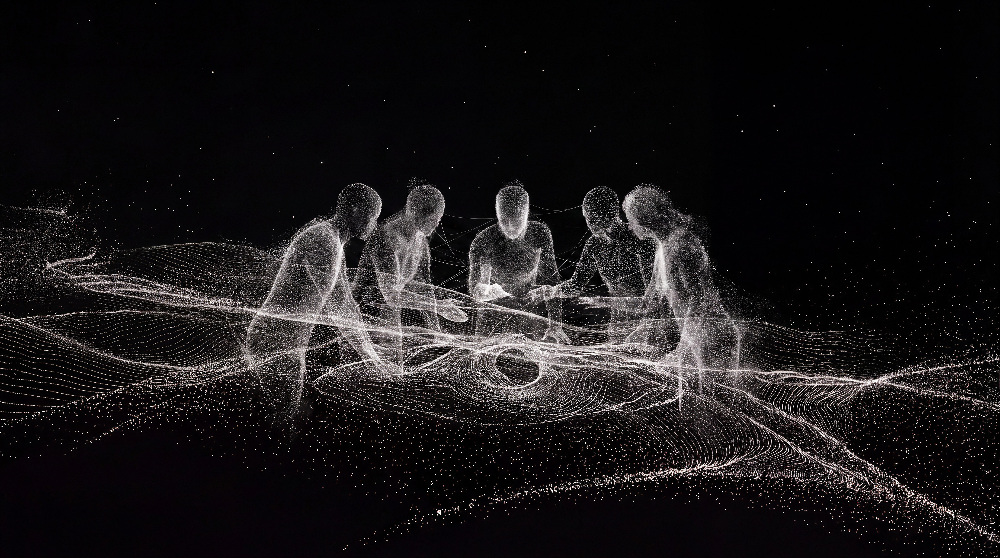

Ar/Cut
Ar/Cut turns long streams into short highlights automatically. We built every surface it has: the logo, the type system, the brand, the marketing site, and the product itself. The most complete engagement we have run.
Identity · Web · Product
Built by founders, for founders. Guided by strategy and made with precision, we design the brands, products, and digital systems that turn an early idea into a venture people take seriously.
Projects
Ar/Cut turns long streams into short highlights automatically. We built every surface it has: the logo, the type system, the brand, the marketing site, and the product itself. The most complete engagement we have run.
Identity · Web · Product
A politics and economics newsletter that trades in unfiltered takes, so the identity had to read sharp and editorial with no corporate softness. Logo in dark and light, a full colour system, and fifteen applications to launch on.
Identity · Colour system · Art direction
A Russian party concept running nights across Madrid, now opening up to a wider crowd. We ran the social output and designed the language of the events: poster series, DJ lineups, teasers, and the Broadcast Night identity.
Social · Event design · Art direction
A nursery that raises trees and sells them on, where the product takes years to grow and buyers want to see it before they commit. We designed and built the site around the stock itself: what is growing, at what size, and for whom.
Web design · Development
A maritime safety wearable: a discreet bracelet that detects a man overboard and puts the crew on it in seconds. Safety hardware has to read calm and certain rather than alarmed, and the identity and site were built to that.
Identity · Web · Product

We are a small studio in Madrid building the digital presence of early-stage companies: the identity, the site, and the product surfaces around them. The work is made to hold up in front of investors and first customers long before a company looks the part.